1
旗・マップを確認
投函禁止物件か、投函可能な物件かを最初に確認します。
番地を回る前に、必ずマップ上に旗が立っていないか確認。
投函禁止物件はマップで必ず確認してください。
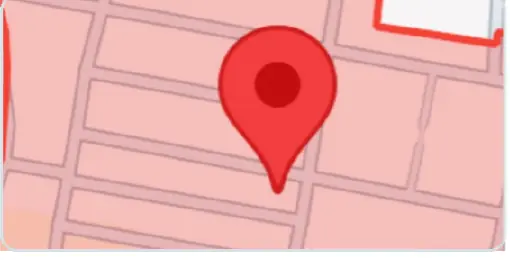
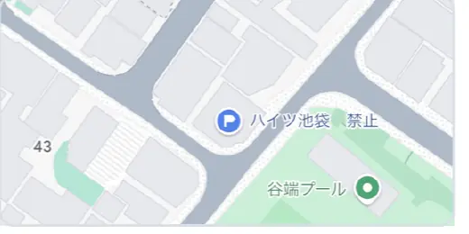
Training Support Portal
基本ルールの確認から、配布スピードを上げる具体的な動作まで、このページからいつでも見返せます。研修中だけでなく、実際に配布するときの復習にも使ってください。
研修内容をどれだけ理解できているか、実際の問題で確認します
研修・配布前に必ず確認しておきたい内容
禁止文言 基本
投函を避けるべき文言を、4つのポイントで確認します。
開始報告・終了報告について 重要
配布前後に必要な報告のタイミングと、忘れないための基本を確認します。
禁止物件の通過報告について 重要
禁止物件を通過した際に必要な報告方法と、共有するポイントを確認します。
投函する際の注意点 重要
チラシを投函するときに必ず気をつけるポイントを確認します。
エリアと番地の把握 基本
配布エリアの範囲と番地の見方を理解し、現在地を把握しながら配布するための基本を確認します。
詰め配布とは 基本
番地を順番に配り切る考え方と、対象物件を間違えないための基本を確認します。
対象物件の例 基本
戸建配布の場合に、配布対象となる物件を写真の例で確認します。
1日の流れ（出勤～退勤まで） 基本
出勤から現場への移動、配布開始・切り上げまでの1日の基本的な流れを確認します。
シフトの提出方法や確認事項をまとめる項目
提出先リンク
シフト提出はこちらから開けます。
ID：U○○○
パスワード：携帯番号下4桁
シフト確認、注意点
シフト確定の流れ、時間指定がある場合の注意点、連絡がない場合の確認方法をまとめています。
「なぜ遅いのか」「どこを直せば速くなるのか」を具体的に確認
スキルアップ項目 おすすめ
配布スピードに大きなロスが出る動作と、具体的な改善方法を確認できます。
雨の日の配布方法
雨天時にチラシを濡らさず、安全に配布するためのポイントを確認します。
公式LINEはこちらから開けます
開始・終了報告は、業務ポータル・ポスマネから送信して終わりではありません。送信後のLINE報告までを1セットとして行ってください。
ポスマネ・業務ポータルで送信後、グループLINEへの報告までが1セットです。
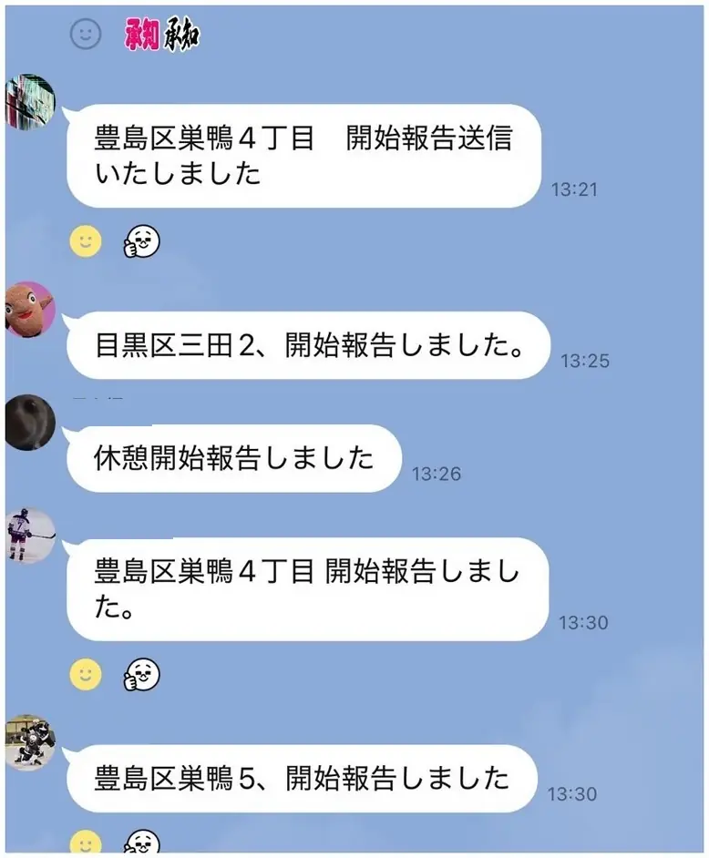
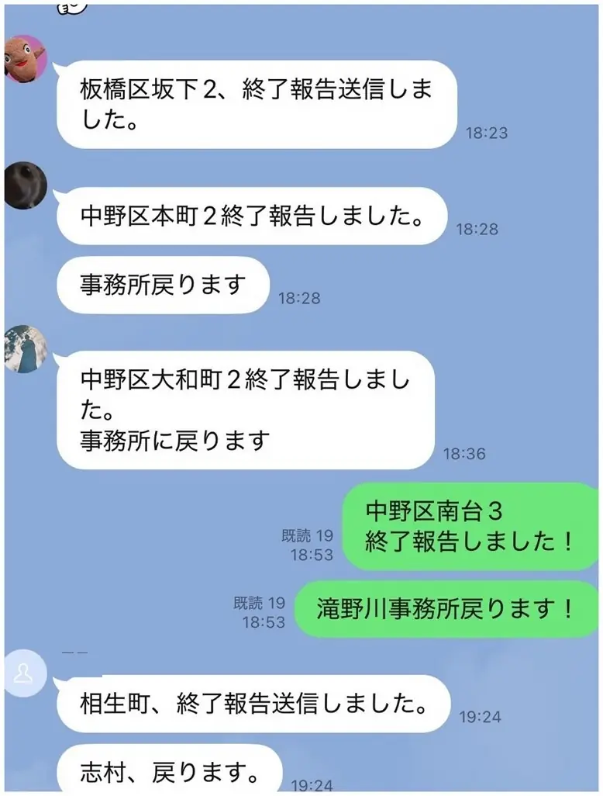
開始・終了報告に添付する画像は、ラクバルの稼働画面をスクリーンショットしてください。
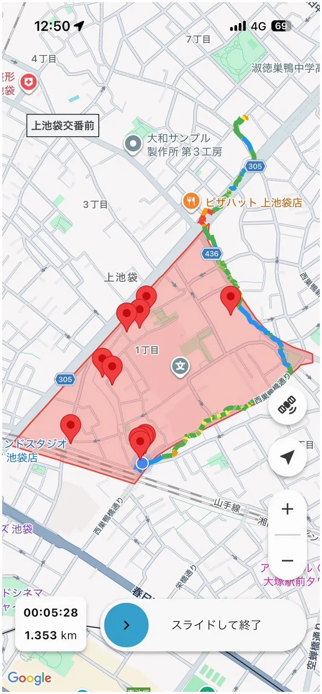
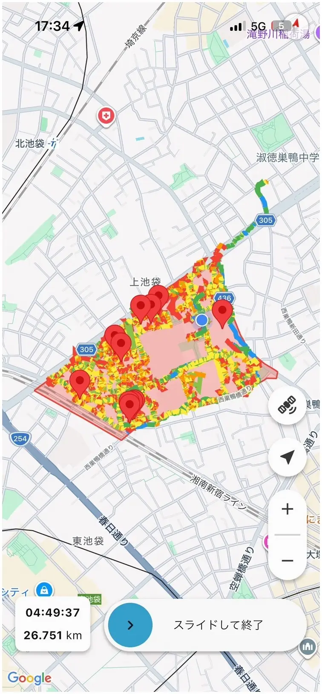
通常の開始・終了だけでなく、稼働状況に変化があった場合も内容を残してください。
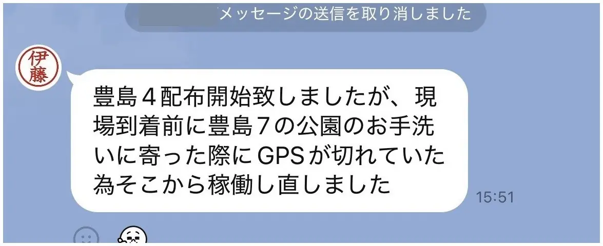
配布中にCP・投函禁止物件の前を通過するタイミングがあります。誤投函していないことを内勤がリアルタイムで確認できるよう、通過時に必ず報告してください。
配布ルート上でCP・投函禁止物件の前を通るタイミングになったら、一度立ち止まります。そのまま通り過ぎず、ラクバル上で対象物件を確認してください。
対象のピンをタップし、物件名・住所と現在地が確認できる状態でスクリーンショットを撮ります。
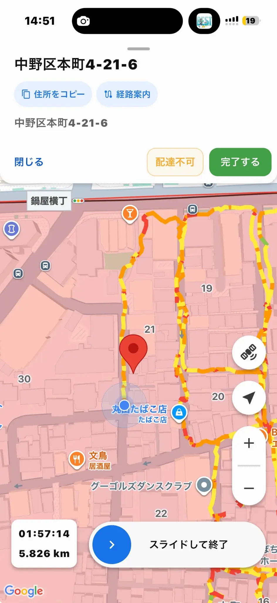
撮ったスクリーンショットを、本人と内勤が入っている個人グループへ貼り付けます。あわせて、住所または物件名が分かるように「通過しました」と一言報告してください。
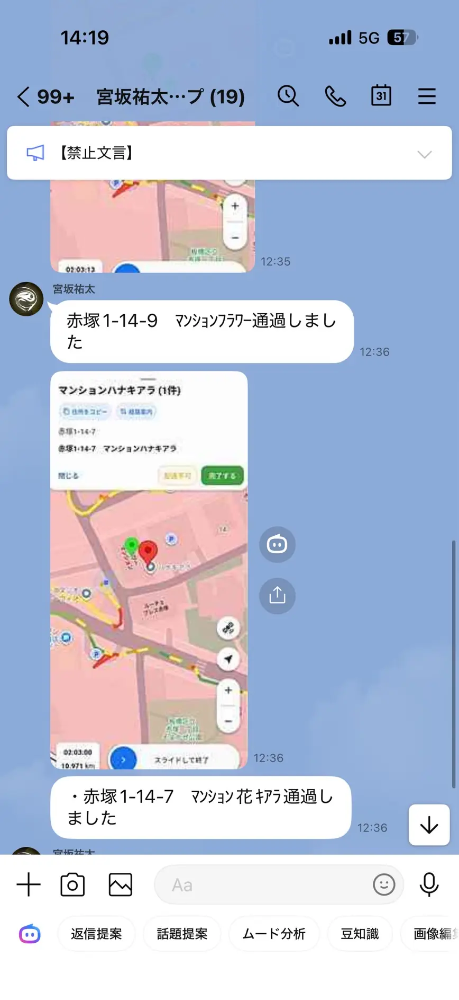
内勤ではラクバルをリアルタイムで確認しています。禁止物件付近を通っているのに報告がないと、「誤って投函してしまったのではないか」と確認が必要になります。
報告は内勤の確認のためだけでなく、「禁止物件には投函していない」と自分自身を守る記録にもなります。通過報告は必ず残してください。
最初の確認を飛ばさず、必ずこの順番で確認してから投函します。
投函禁止物件か、投函可能な物件かを最初に確認します。
番地を回る前に、必ずマップ上に旗が立っていないか確認。
投函禁止物件はマップで必ず確認してください。


金銭・回収・連絡・法的措置など、強い文言がないかを確認します。
「入れたらどうなるか分からない」と感じたら、投函せず、すぐ内勤に連絡して確認してください。
各ポストに個別のお断り・注意書きがないか確認します。
入れる前に、個人ポストを一つずつ確認してください。
管理人用・管理組合用・予備ポストがないか必ず確認し、誤って投函しないようにしてください。
禁止の意思表示は、マンション全体の共用ポストを対象にした掲示、戸建てポストのステッカー、各ポストごとの個別表示など、いろいろな形で出ています。
少しでも「投函禁止」「お断り」「不要」などの表示があれば、入れずに止まって確認してください。
共用ポストの近くの壁や掲示面に貼られているケースです。1つのポストだけではなく、建物全体の共用ポストが対象と考えてください。
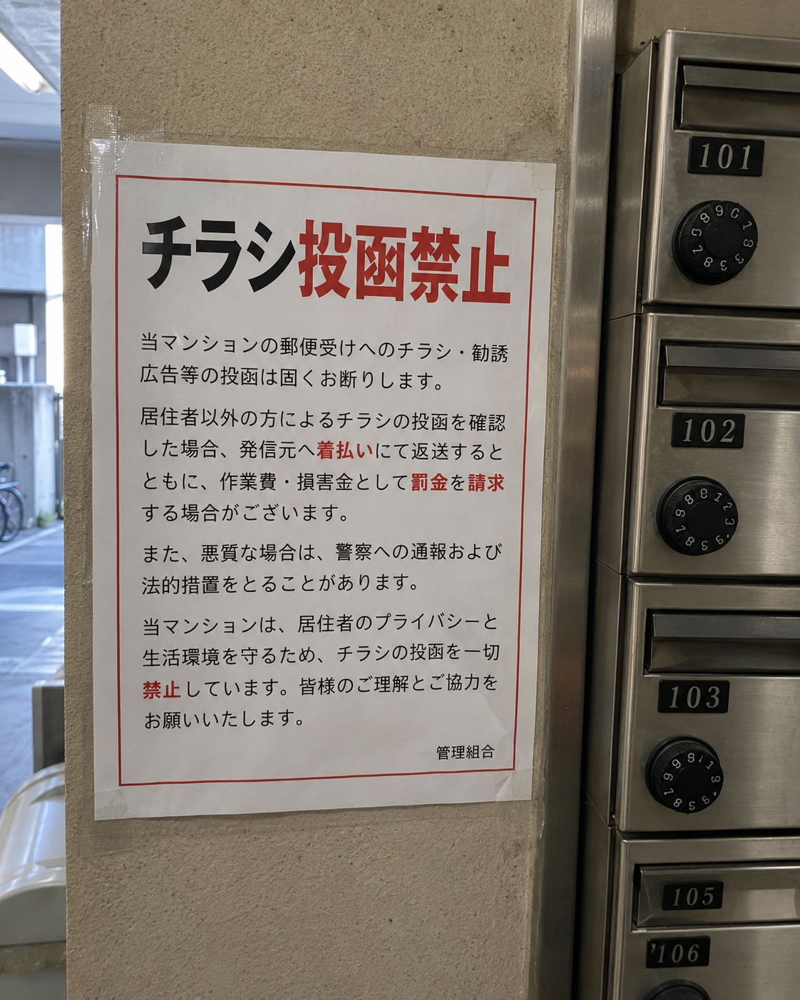
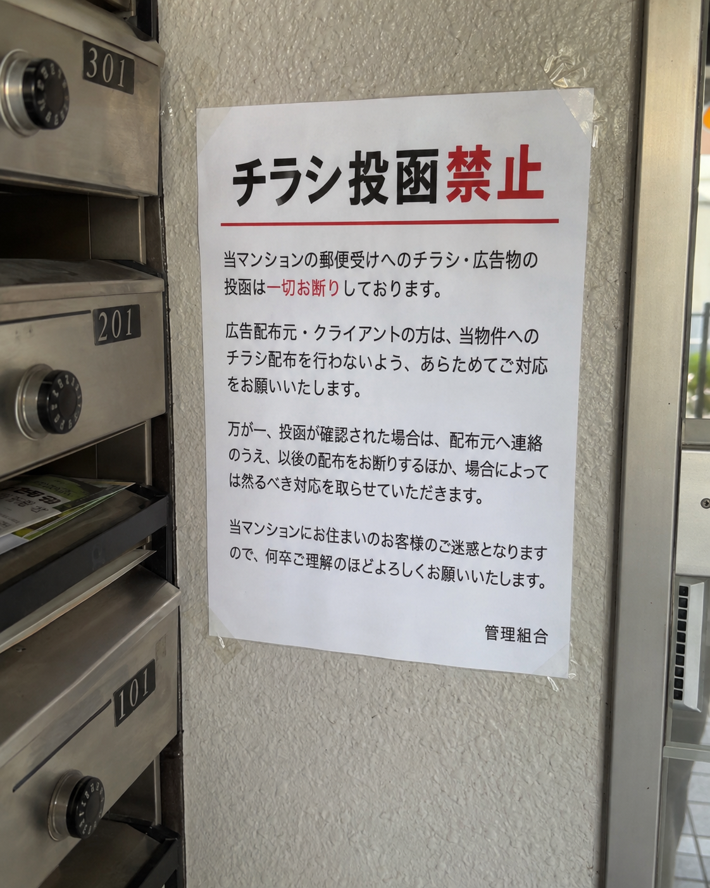
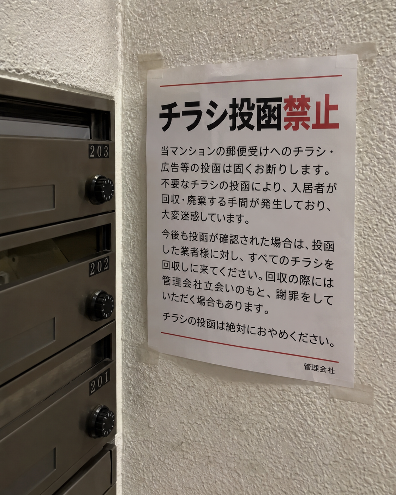
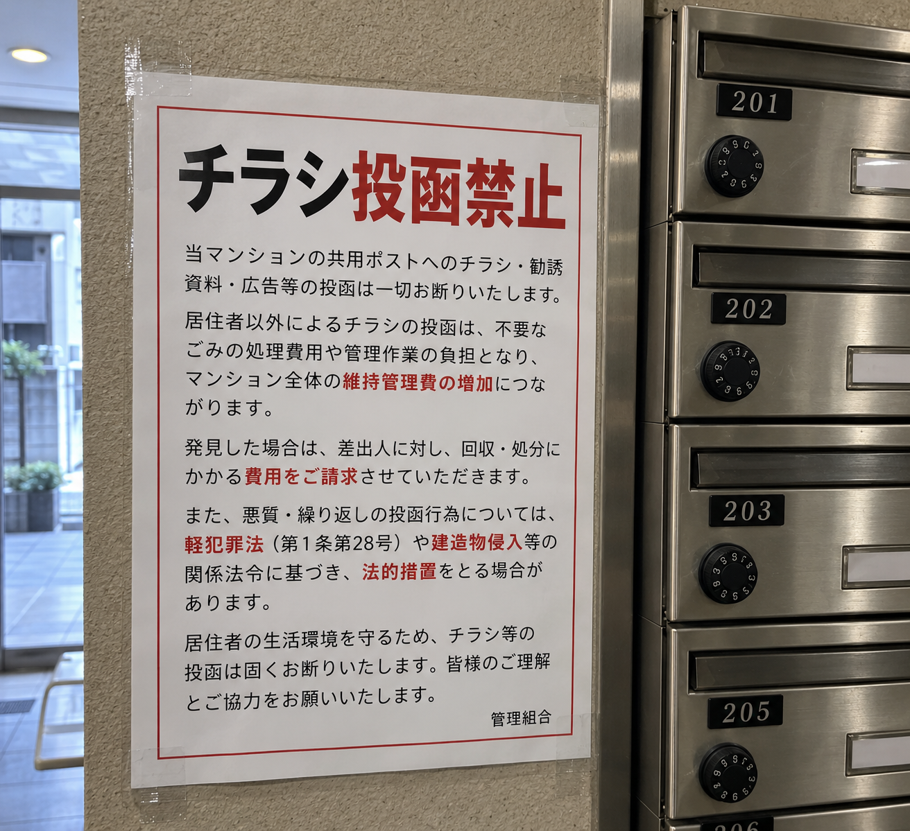
戸建てのポストや門柱に直接貼られている小さな表示です。サイズが小さくても、表示があれば投函禁止です。
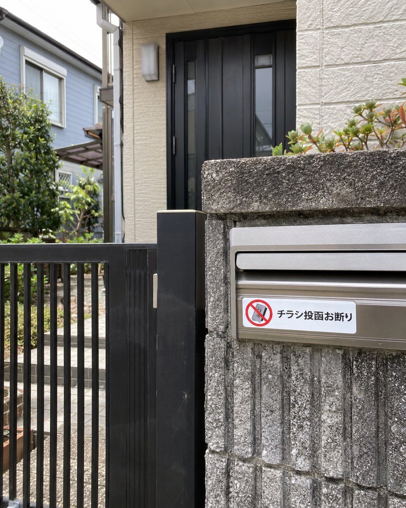
集合ポストのうち、特定の部屋のポストだけにステッカーが貼られているケースです。建物全体の掲示がなくても、貼られているポストには入れません。
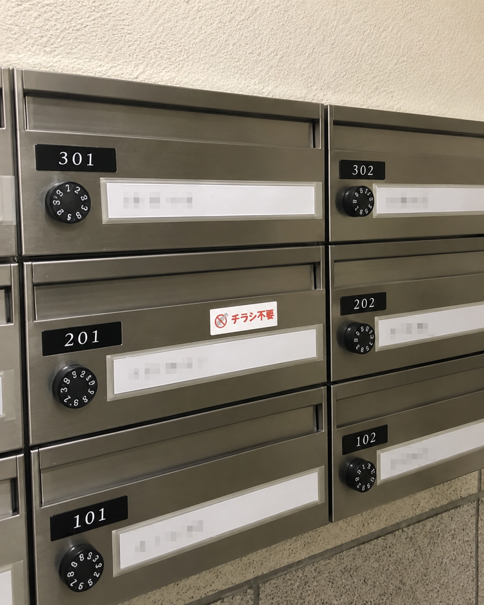
判断できない → 入れずに、すぐ内勤へ連絡して確認。
間違えて投函 → すぐにグループへ報告。
エリア ＝ 今日配る大きな範囲 ／ 番地 ＝ その中を細かく分けた区切り
マップの枠・色で指定される大きな範囲です。
この枠の中だけ配ると覚えてください。
地図上の「5」「6」「16」などの数字が番地です。
同じ番地の中に、家・マンション・店舗などが複数あることがあります。
1番地 → 2番地 → 3番地… または 60 → 59 → 58…
この順番で進むのが「詰め配布」の基本です。
地図を拡大して番地とエリアの形を確認し、特に「隣のエリア」と「一筆書きで進められる形」を先に見ておきます。
境界付近は、隣エリアの番地を拾いやすい場所です。次の番地を先に確認してから境界付近を進みます。
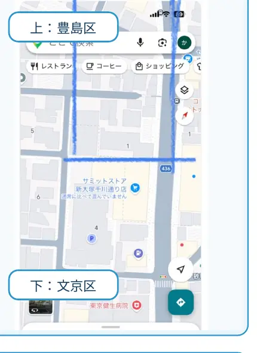
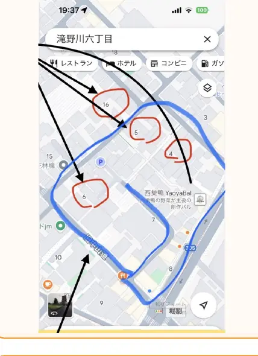
道路・地形などで必要な場合のみ、一筆書きのイメージで前後の番地を入れ替えて進めてもOKです。大きく番地を飛ばすのはNG。
気づかないまま進めるのが一番危険です。迷った時は一度止めて、現在地と番地を確認してから再開します。順番を守ることで、配布漏れ・重複・引き継ぎミスを防ぎます。
戸建配布の案件では、戸建て（一軒家）のみが配布対象です。集合住宅には投函しないよう、写真の例で見分け方を確認します。
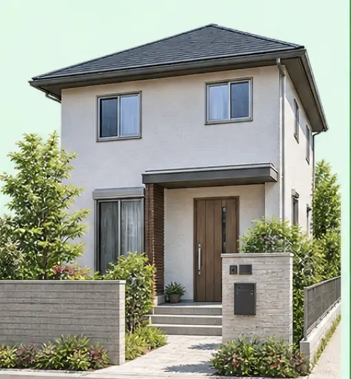
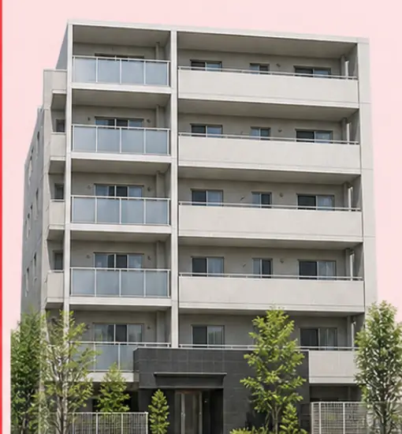
フルタイム・時間指定なしの場合の目安です。まずは1日の基本的な流れを把握して、出発前の確認を忘れないようにしてください。
出勤後はまずチェックシートを行います。出発前にやるべきこと・確認事項はチェックシート内に記載されているため、内容に沿って準備を進めます。
事務所から、自転車で20〜30分程度のエリアへ向かいます。
現場到着後、当日の指示・エリアを確認して配布を開始します。
20:00頃までを目安に配布を切り上げ、事務所へ戻ってから以下を順番に確認して退勤します。
丁寧な配布を積み重ねることで、任せられる枚数やエリアも少しずつ増えていきます。分からないことや困ったことは内勤とすぐ共有し、しっかり連携を取りながら、より良い配布・より良い組織をつくっていきましょう。
希望を出しただけでは出勤確定ではありません。翌日の案内とグループ招待を確認して、確定状況を判断してください。
原則、フルタイムの稼働を優先します。
配布員が使用する自転車の台数には限りがあり、フルタイムの方が配布できる枚数も多いため、同日の希望が重なった場合は、時間指定の方のシフトを外す場合があります。
自分から確認してください。
その希望日の稼働はなしとなります。希望を提出しているだけでは出勤確定ではありません。
翌日稼働するメンバー用のグループに招待されます。
次の日の集合場所と集合時間が、個人名のグループに送られます。
集合住宅などの禁止表示は、言い回しを丸暗記するのではなく「何を求めている文言なのか」で判断します。下の4つのどれかに当てはまる場合は、投函対象から除外してください。
投函した場合に、配布側へ金銭的な負担が発生することを示す文言。
広告の配布元・広告主・クライアントなど、弊社のお客様への連絡や対応につながる文言。
投函後に、回収・訪問・謝罪などの対応を求められる文言。
投函した場合に、法的な対応を取ることを示している文言。
下の写真は、4つの禁止文言の考え方に当てはまる実例です。1枚の掲示の中に複数の禁止文言が同時に入っていることもあります。文言を丸暗記するのではなく、どの考え方に当てはまるかで判断してください。
集合住宅の掲示では、金銭・お客様・工数・法的のうち、どれか1つでも読み取れたら投函しません。
個人宅や個別ポストでは、ここまで強い文言でなくても、「チラシ不要」「投函お断り」などの意思表示がある時点で投函しません。
当日の装備に合わせて、確認したい項目を選択してください。
雨の日の持ち運び方法
チラシや備品を濡らさずに持ち運ぶ方法を確認します。
カッパの場合
カッパを着用して配布する場合の動き方を動画で確認します。
傘の場合
傘を使用して配布する場合の動き方を動画で確認します。
雨天時にチラシや備品を濡らさないための持ち運び方法をここで確認します。
雨天時の持ち運び方法を、動画で確認してください。
カッパ着用時の実演動画です。
カッパ着用時の配布方法を、動画で確認してください。
傘使用時の実演動画です。
傘使用時の配布方法を、動画で確認してください。
配布が遅いときは、歩く速さよりも「1件ごとに止まる」「次を探してから動く」「チラシ準備が後手になる」といった小さなロスが積み重なっているケースがあります。下の項目を見ながら、まずロス度が大きいものから改善してください。
①ポスト前で毎回チラシを準備する ②1件終わってから次のポストを探す ③同じ道を何度も往復する ④地図確認のたびに完全停止する。ここが残っていると、細かい技術改善より先に大きな時間ロスが発生します。